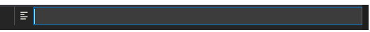
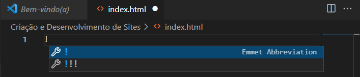

Conceito de HTML
O HTML (Hypertext Markup Language, traduzindo literalmente: Linguagem de marcação de hipertexto) é uma linguagem de marcação que tem por finalidade produzir conteúdos. E juntamente com o CSS (Cascading Style Sheets, traduzindo: Folhas de Estilo em Cascata) tornam-se duas ferramentas incríveis para o desenvolvimento de sites, blogs e derivados.
Para se desenvolver sites, como este que estou compartilhando com vocês, temos diversos aplicativos editores de códigos, mas o que me foi indicado na época pelo prof. Guanabara foi o Visual Studio Code (VS). Inicialmente, me adaptei muito bem e com menos de 1 semana já estava doido pra começar a desenvolver esse blog (lembrando que estou desenvolvendo ele na medida em que vou aprendendo e conhecendo sobre as ferramentas para desenvolvimento e programação).
Não irei aqui colocar conteúdos básicos sobre o HTML, pois a idéia é compartilhar algumas imagens de aprendizados que vou tendo e apresentar para vocês.
Vou deixar o conteúdo inicial para o mestre Guanabara 😉
Criando estrutura básica no VS.
Dentro do VS para iniciarmos o código de programação básico. Na parte superior esquerda, temos um ícone com o desenho de duas folhas que vão nos possibilitar abrir novo trabalho
Após clicar no ícone, será aberta uma aba onde podemos localizar uma folha com um "+" que nos possibilitará abrir novo arquivo.
Ao clicar na folha de novo arquivo, abrirá um campo onde colocaremos um nome do arquivo, o qual sugiro colocar o index (que é a página inicial do site ou blog.
É importante ressaltar que deve ao final colocar a extensão *.html e ao final pressionar o Enter.
Após isso abriá uma ao lado direito, onde poderemos colocar nossos primeiros códigos.
Para colocarmos os códigos base HTML's necessitaremos somente escrever "!" e pressionar o Enter que o VS cuida do resto.
